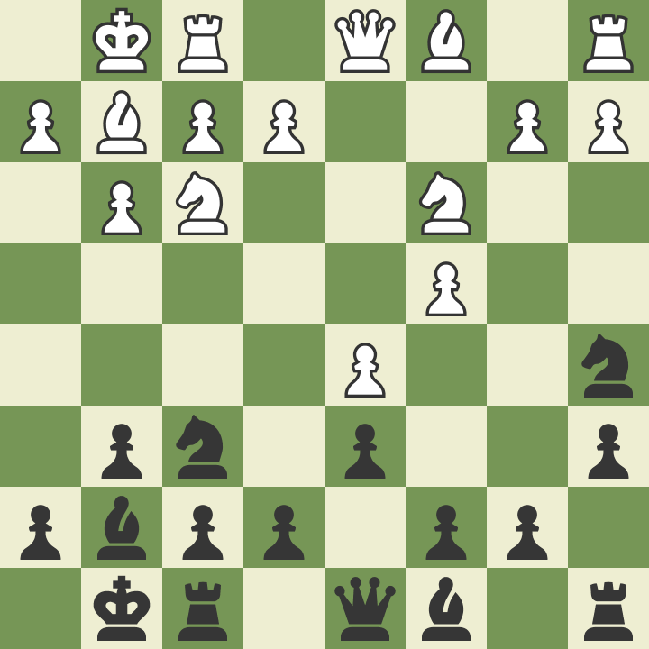
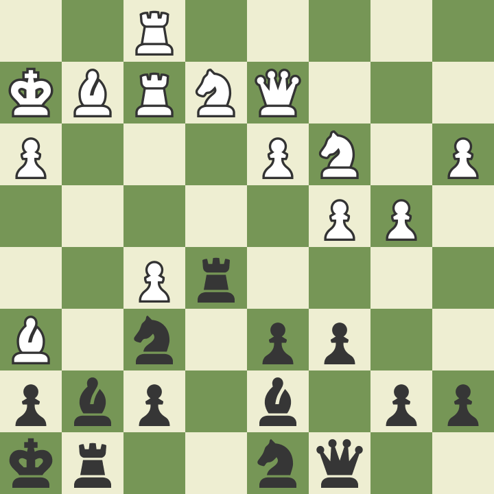

三宮で開催された ジャパンチェスクラシック 2023 に参加しました。印象に残った局（おもに敗局）を振り返ります。
7/15 14:30 R3 Kojima, S (IM, JPN, 2335) - Takahashi, H (JPN, 1930) 1-0
2 連勝後の R3 で IM 小島さんとマッチング。

KID, fianchetto, Panno Variation 8… Na5 の局面。詳しく調べてはいなかったものの、やりたい展開があった。それが Levan Pantsulaia vs. Liren Ding, 2011。ギャンビットからさらに 2 テンポダウンする Ding の構想は驚愕で、機会があれば試してみたいと思っていた。
実戦は 9. Nd2 ではなく 9. b3 とここで上局から分岐。この手は危うい気がして事前に考えていなかったが、小島さんが時間をおかず指されたので、これも定跡なのだろうと思った。あとで調べると前例が多数あり、この形を指すなら当然調べておくべきだった。
改めて読むと、ぱっと目につく 9… Nxd5? のような直接手は 10. Nxd5 Bxa1 11. Bd2 で不利（最終手が若干見えづらかった）。また 9… Rb8 や 9… c5 は、おそらく悪い手ではないものの、10. Bb2 でスムーズにフィアンケットに組まれるとポイントを稼がれているような気がした。
そこで本譜は 9…b5 を選択。以下 10. cxb5 axb5 11. b4 の局面で、11… c5!? という手があると局後小島さんに指摘された。実戦は 11… Ng4 12. Nd4 と進め、そこで 12… Nb3? の予定だったのだが 13. Nc6 をうっかりしていた。予定変更で 12… Bxd4 13. Qxd4 Nb3 14. axb3 Rxa1 としたものの、一時的に駒得でもキング周辺が弱くイニシアチブも取られて自信がない。
評価値はまだ互角に近かったらしいが、このあと時間切迫もあり受け間違えて敗北。準備不足と経験不足がもろに出てしまった。
7/16 14:30 R5 Chen, M (CHN, 1749) - Takahashi, H (JPN, 1930) 1-0
中国の小学生？ レーティングは私より低いが、実力ははるかに上と感じた。実際に今大会のパフォーマンスも高い。実力とレーティングにギャップがあるのは、急速に強くなる子どもによくあること。
早々に見知らぬ変化になってしまい、形勢・消費時間ともにビハインドのなかどうにか持ちこたえて迎えた局面。

局面を単純化しなければという焦りから 21… Rxf5 としたものの、22. Rxf5 Bxf5 23. Bxg7 Rxg7 24. Ng3 Rxg3 25. Kxg3 の局面は思いのほか望みがなく、負けを早めた。21… Ne8 で … f6 のブロックを狙い、22. f6 なら Nd8-e6 から活用するプランとの比較だったが、結果的にはそちらのほうがましだったようだ。とはいえ残り 5 分ではどちらにせよ厳しかった。
なお最善は 21… Bxf5。時間切迫もあり 22. d4 で駄目と早々に読みを打ち切ったが、22… Bxh3! 23. dxe4? Ng4! なら -1.5 まであった。
小島戦もそうだったが、